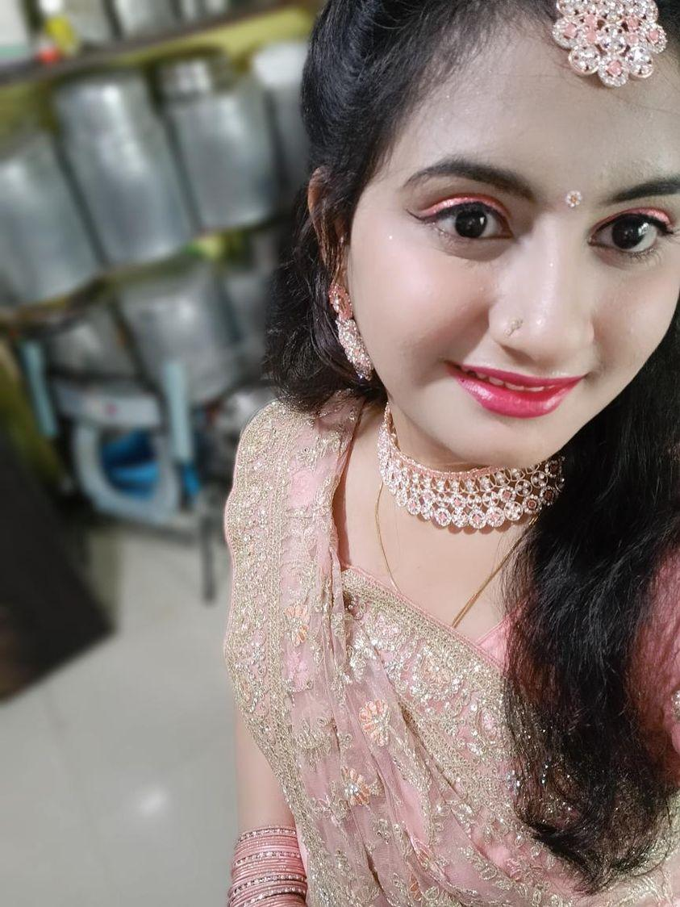
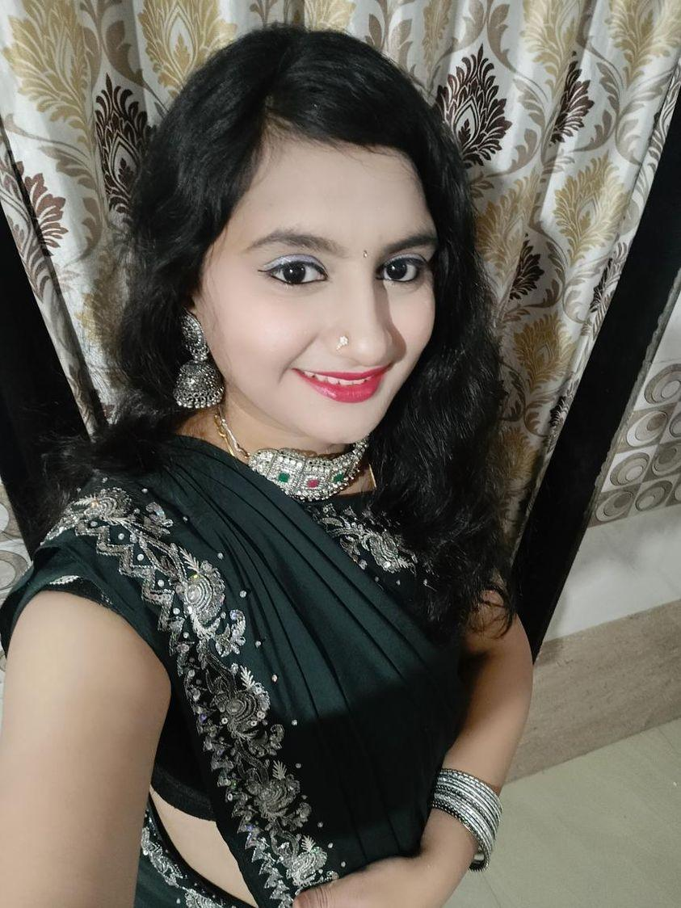
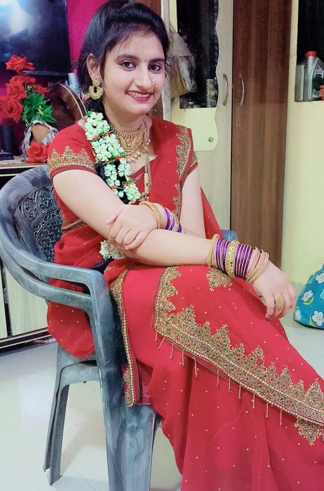
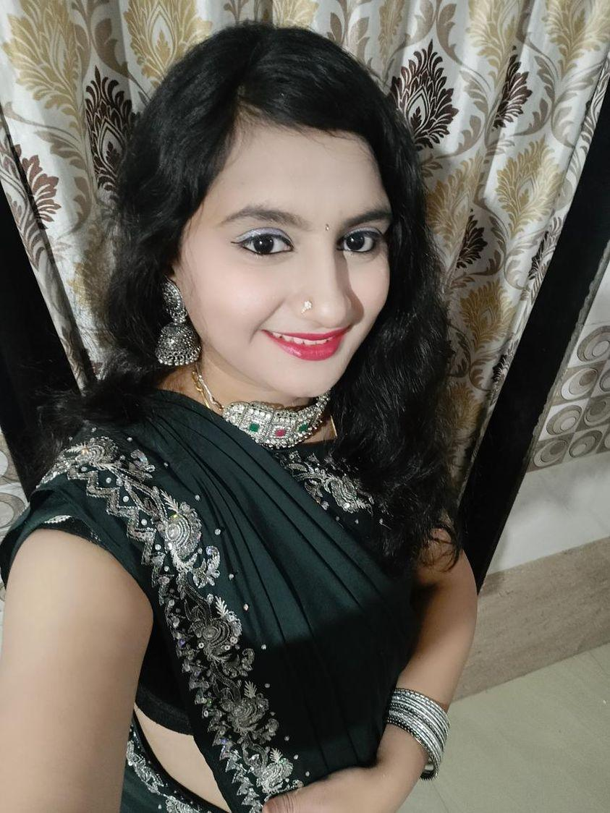
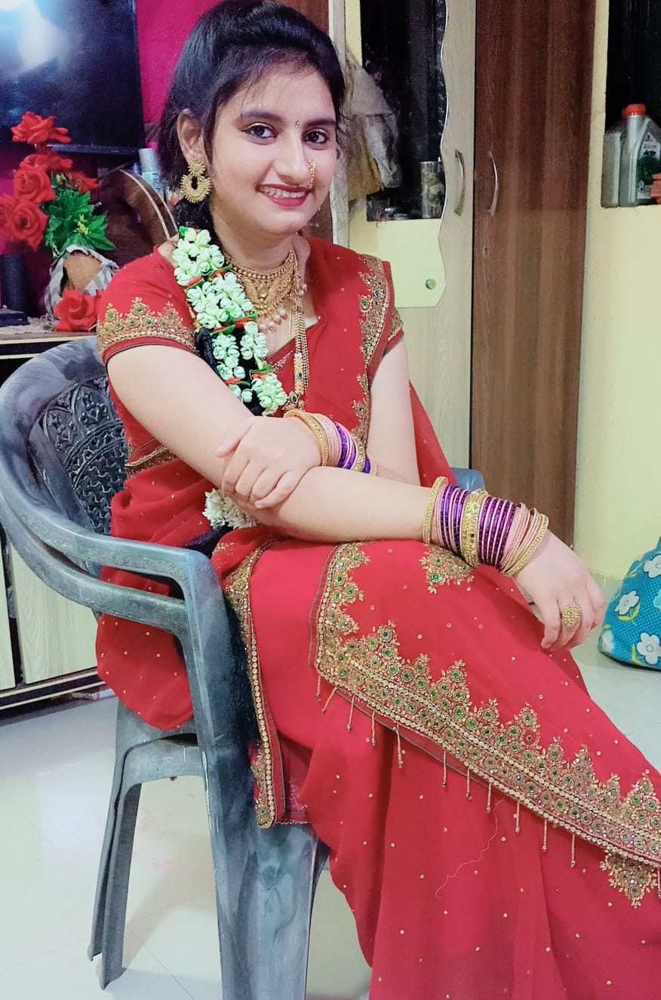

Happy birthday to someone who's smart,gorgeous,funny and reminds me a lot of myself...
-From one fabulous chick to another one
Just wanted to be the first one to wish you happy birthday....soo i can feel superior to your other well wishers....sooo happy birthday sempaiiiiiiii.

Friendship occurs between two people not related by blood. They may be totally different, yet good friends. Your parents can’t always be there with you. You are on your own in school and other places. Who makes you feel a family in places like these? Who doesn’t let you miss your parents in school? The answer to all the questions is – friends.
A good friend or friends will never leave you alone. You can’t feel sad and lonely with a good friend on your side. Friendship is like the most important blessings of God. True friendship cannot be explained but it can only be felt. You know it as soon as you are in friendship. You can feel the emotional connection with your friend/s. It is like getting a companion for all your adventures. Whether its play of studies, you always look up to your friends.
Not all people are lucky to have a friendship. Some are shy while some are not friendly. We should make friends with shy people and try to make them bold. Friendship makes sure that we spend our life happily. Without friendship, there would be no life.
 



Enjoy your day sempaiiii...stay like you are always ....a loving and kind friend...and you are the best thing ever happen to me...i cherish this always.
GOD bless you dear with lots of hapiness prosperety enjoyment and fullfill all your wishes for future endevours. ALL THE BEST!
from your lovely
-chikku & pihu